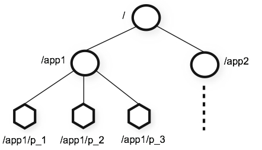

Zookeeper 是一款使用关于分布式应用的高性能协调服务。它可以通过一些简单的接口实现通用服务的可见性。例如命名，配置管理，同步以及组服务等等，使用zookeeper可以避免我们为这些功能进行耗时耗力的开发。开发人员可以直接使用现有的接口实现一致性，组管理，leader选举以及相关的业务协议。
Zookeeper简介
1. Zookeeper：为分布式应用而生的分布式协调服务
Zookeeper 是一个适用于分布式应用的分布式协调服务组件。它为用户定义了一些基本的操作，用户可以基于这些操作实现自身应用的同步，配置维护，组管理和命名等需求。Zookeeper的设计的特点是使用类似文件系统的树结构，以及其易于理解和实现的编程。
众所周知，协调服务很难确保其准确性。并且，处理不当的协调服务很容易引起竞争条件和死锁。而Zookeeper服务则让我们的应用不必耗费精力从头开始去实现这些协调和同步功能。
2. 设计目标
简单：用户可以通过Zookeeper实现服务之间的协调服务，这归功于Zookeeper简单易懂的数据结构。Zookeeper使用了分层的命名空间，跟传统的文件系统类似。这些分层的命名空间维护着已注册的数据ZNode，类似传统文件系统中的文件或者文件夹，区别在于前者可以存储数据。因为Zookeeper的数据都是存储在内存中的，所以他可以在低实验的情况下实现较高的吞吐量。
Zookeeper的实现非常重视高性能，高可用和严格有序的访问。高性能意味着Zookeeper适用于大型的分布式系统。高可用可以让Zookeeper有效的避免单点故障的问题。而严格有序可以让一些复杂的同步原语通过客户端就能实现。
多副本：如同Zookeeper负责协调的组件类似，Zookeeper本身也实现了多副本机制。

组成Zookeeper集群的服务器必须能够相互感知。他们共同维护了一个内存状态镜像以及存储在持久存储介质上的事务日志和snapshot。只要集群中的大部分节点是OK的，那么Zookeeper服务就是可用的。
Zookeeper的客户端可以连接到集群中的任意一台服务器上。客户端需要维护自身的TCP连接，它会通过这个连接请求，获取服务端响应，获取watch时间，同时它也会通过这个连接来发送心跳信息。如果连接到服务端的TCP连接断掉了，客户端就会尝试连接到其他的服务端。
有序：对于每一个更新操作，Zookeeper都会通过一个数字标记。这个数字反映了这个操作在所有事物操作中的顺序。后续的操作就能通过这个序号来实现更高级别的抽象，例如同步原语。
响应快速：Zookeeper很快，尤其是”读操作”，贼快！使用Zookeeper的应用运行在成千上万台服务器上，而Zookeeper在多读少写的场景中表现尤佳，一般情况下，读写比例大约在10:1会比较好。
3. 数据模型 & 分层命名空间
Zookeeper使用的命名空间和传统的文件系统很类似。名称是由路径组合而来。Zookeeper中每个node的命名空间都是一个路径。

4. 节点 & 临时节点
Zookeeper和普通的文件系统不同的是他的节点可以关联数据，同时它还可以有子节点。如果站在普通文件系统的角度看，这就像是一个文件夹有数据内容。（Zookeeper这样设计的目的是为了存放协调数据：状态信息，配置，位置信息等等。所以在单个znode上存放的数据通常都比较小，一般在byte到kb之间。）Zookeeper中的数据节点一般称之为ZNode。
ZNode维护了一个状态数据结构，包含了版本号，表示数据更改，ACL更改，还有一个时间戳用于缓存确认和用于协调更新。每当一个ZNode数据改变时，其对应的版本号就会增加。Zookeeper客户端在获取ZNode数据的同时也会获取到它的版本号。
存储在每个Znode上的数据都能都实现原子级别的读写。多操作获取节点对应的数据，写操作则会覆盖原来的数据。每个Znode都有一个Access Control List (ACL)来约束哪些用户有权限执行相关的操作。
Zookeeper 中也有临时节点的概念。这种类型的节点会在客户端连接断开的时候删除，反之，只要客户端连接并没有执行删除操作的情况下，它就会一直存在。
5. 条件更新 & watches
Zookeeper支持Watch。客户端可以在ZNode上创建watch, watch 会跟ZNode删除及更改关联。 当一个watch被创建， 客户端就可以在ZNode更改的时候收到一些包表明Znode已经发生了更改。如果客户端和服务端的连接断开了，那么客户端会收到一个本地提示。
6. 提供的保证
Zookeeper很快也很简单。因为它的目标是作为构建更复杂的服务(比如同步)的基础，所以它提供了如下的保证：
- 顺序一致性：来自客户端的事务操作会按照提交的顺序一一执行；
- 原子性：更新操作要么成功要么失败，不会有中间结果；
- 单一视图：无论客户端连接的是哪个服务器，它看到的服务端数据模型都是一致的；
- 可靠性：一旦某个事务被执行了，那么执行结果就会一直保留，直到另一个客户端覆写了这个事务操作；
- 实时性：一旦事务操作被执行，那么Zookeeper可以保证在 一段时间 内这个操作会被所有的客户端感知到。即他能够保证最终一致性。
7. 简单的API
Zookeeper的设计目标之一就是提供简单的编程接口。所以，Zookeeper只支持以下的操作：
- create：在指定路径下创建ZNode；
- delete：删除一个ZNode；
- exists：判断指定的ZNode是否存在；
- get data：读取ZNode的数据；
- set data：设置ZNode的数据；
- get children：获取指定ZNode的子目录列表；
- sync：等待数据同步
8. 实现
下图展示了Zookeeper的高级组件。除了Request Processor之外，每个服务器都会有其他组件的副本。

Replicated Database(副本数据库)是一个内存数据库，它维护了整个集群的data tree。更新操作会被记录到磁盘上，这样它就可以被恢复了。同时，写操作被内存数据库执行之前也是先序列化到本地的。
每个Zookeeper服务端都可以为 客户端提供服务，客户端可以连接任意一个服务端来提交请求。对于 读 请求，服务端会从本地的内存数据库副本中获取数据返回，而对于 写 请求以及更改服务状态的请求则会由一致性协议来处理。
其一致性要求所有的来自客户端的 写 请求都要被转发到Leader节点上。除了Leader节点，剩下的节点称为 Follower 节点。它们会接受Leader节点的proposal，并且确定消息传递。消息层负责在出现故障时替换Leader，并将Follower与Leader同步。
Zookeeper使用自定义的原子性消息协议。因为消息层是原子性的，所以zookeeper可以保证本地的副本不会出现偏差。当Leader节点接收到一个写请求，它会计算执行这个写请求时系统的状态，然后将其转换成包含这一状态的事务。